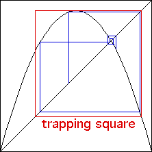

| A trapping square is small square, with opposite
corners on the line y = x, having two properties: |
| the iterates of almost every starting point eventually enters the
trapping square, and |
| once the iterates enter the trapping square, they never leave. |
|
| For example, |
|
 |
 |
| Iterates enter the trapping square |
|
Iterates never leave the trapping square |
|
| For functions L(x) that increase to their maximum value (at
x = 1/2, say) and then
decrease, the trapping square is defined by the values L(1/2) and
L2(1/2). Here is an illustration. |
|